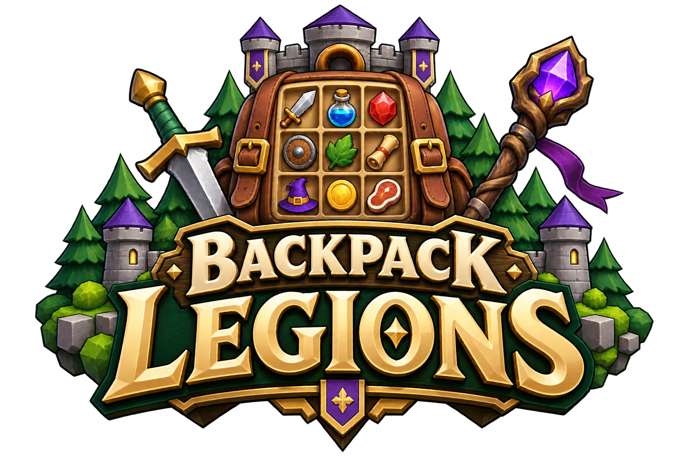
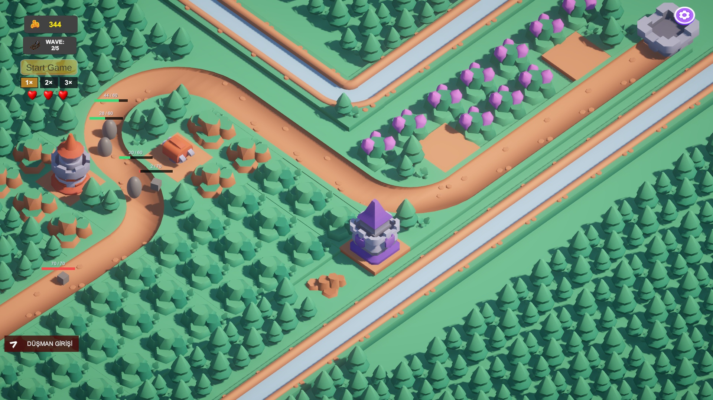
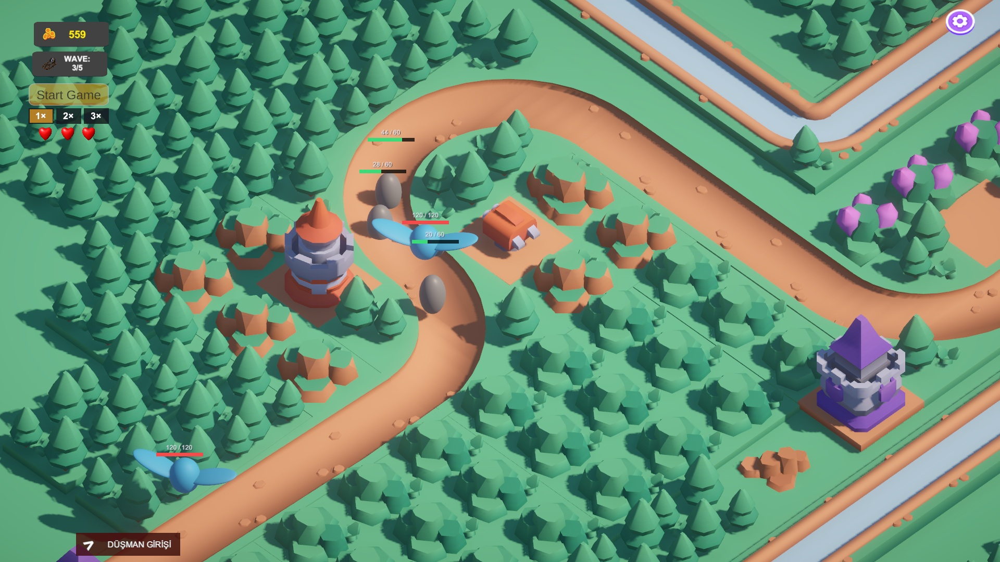
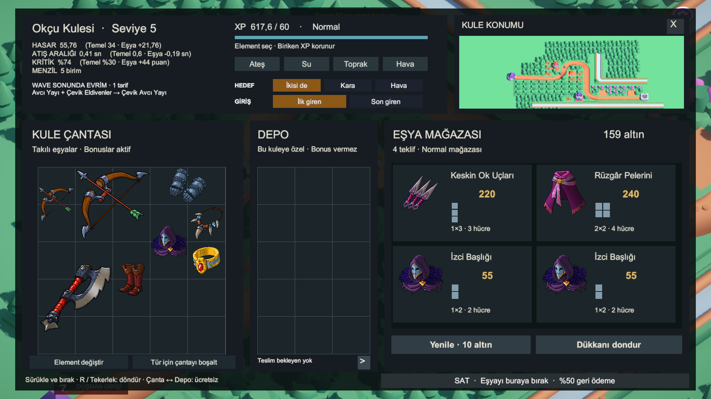
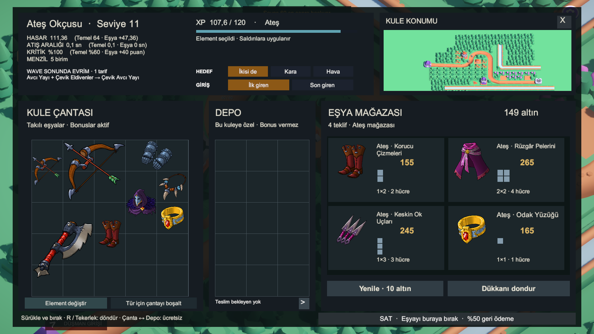
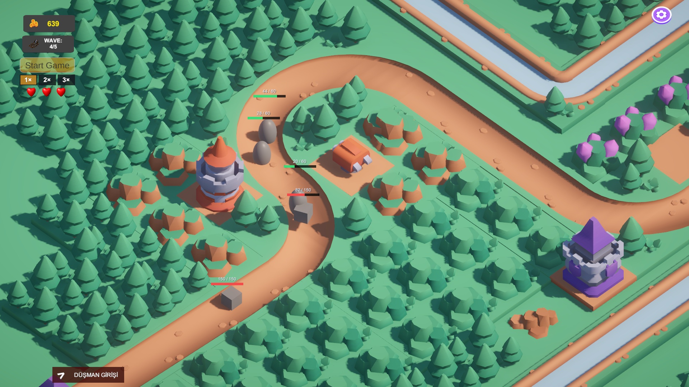

Backpack Legions için oyun içinden alınmış çekimler, çanta ve element mekaniğini gösteren kısa video ve şeffaf arka planlı logo.

32 saniye · 1920 × 1080 · 30 fps · H.264 / AAC · Özgün sentezlenmiş müzik





Bu paket mevcut prototipin gerçek görüntülerini içerir. Birlikler ve bazı düşmanlar hâlen geçici geometrik modeller kullanıyor. Logo yapay zekâyla üretildi; oyun ekranlarına yapay zekâyla içerik eklenmedi. Kapsül görselleri bu paketin kapsamında değildir.